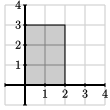
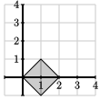
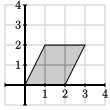
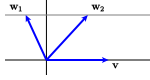
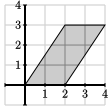
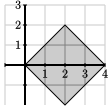
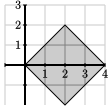

Section 3.4 Determinants
In this chapter, we have been concerned with bases and related questions about the invertibility of square matrices. We saw that a square matrix is invertible if and only if it is row equivalent to the identity matrix. In this section, we will develop a numerical criterion that tells us whether a square matrix is invertible. This criterion will prove useful in the next chapter.
To begin, let's consider a \(2\times2\) matrix \(A\) whose columns are vectors \(\vvec_1\) and \(\vvec_2\text{.}\) We have frequently drawn the vectors and considered the linear combinations they form through a figure such as Figure 3.4.1.
Notice how the linear combinations form a set of congruent parallelograms in the plane. In this section, we will measure the area of the parallelograms, which will lead naturally to a numerical quantity called the determinant, that tells us if the matrix \(A\) is invertible.
To recall, if we are given the parallelogram in the figure, we find its area by multiplying the length of one side by the perpendicular distance to its parallel side. Using the notation in the figure, the area of the parallelogram is \(bh\text{.}\)
Preview Activity 3.4.1.
We will explore the area formula in this preview activity.
-
Find the area of the following parallelograms.
i.
ii.
iii.
iv.
v.
Explain why the area of the parallelogram formed by the vectors \(\vvec\) and \(\wvec_1\) is the same as that formed by \(\vvec\) and \(\wvec_2\text{.}\)

Subsection 3.4.1 Determinants of \(2\times2\) matrices
We will now use our familiarity with parallelograms to define the determinant of a \(2\times2\) matrix \(A = \left[\begin{array}{rr} \vvec_1 \amp \vvec_2 \end{array}\right]\text{.}\) First, however, we need to define the orientation of a pair of vectors. As shown in Figure 3.4.2, a pair of vectors \(\vvec_1\) and \(\vvec_2\) is called positively oriented if the angle, measured in the counterclockwise direction, from \(\vvec_1\) to \(\vvec_2\) is less than \(180^\circ\text{;}\) we say the pair is \(negatively\) oriented if it is more than \(180^\circ\text{.}\)

We can now define the determinant of a \(2\times2\) matrix \(A\text{.}\)
Definition 3.4.3.
Suppose a \(2\times2\) matrix \(A\) has columns \(\vvec_1\) and \(\vvec_2\text{.}\) If the pair of vectors is positively oriented, then the determinant of \(A\text{,}\) denoted \(\det A\text{,}\) is the area of the parallelogram formed by \(\vvec_1\) and \(\vvec_2\text{.}\) If the pair is negatively oriented, then \(\det A\) is minus the area of the parallelogram.
Example 3.4.4.
Consider the determinant of the identity matrix
As seen on the left of Figure 3.4.5, the vectors \(\vvec_1 = \evec_1\) and \(\vvec_2=\evec_2\) form a positively oriented pair. Since the parallelogram they form is a \(1\times1\) square, we have \(\det I = 1.\)
Now we will consider the matrix
As seen on the right of Figure 3.4.5, the vectors \(\vvec_1\) and \(\vvec_2\) form a negatively oriented pair. The parallelogram they define is a \(2\times1\) rectangle so we have \(\det A = -2\text{.}\)
The next set of examples will help illustrate some properties of the determinant.
Activity 3.4.2.
We will use the diagram to find the determinant of some simple \(2\times2\) matrices.
The sliders in the diagram below allow you to choose a matrix \(A\). The two vectors representing the columns of the matrix, along with the parallelogram they define, are shown below.
Use the diagram to find the determinant of the matrix \(\left[\begin{array}{rr} -\frac12 \amp 0 \\ 0 \amp 2 \end{array}\right]\text{.}\) What is the geometric effect of the matrix transformation defined by this matrix. What does this lead you to believe is generally true about the determinant of a diagonal matrix?
Use the diagram to find the determinant of the matrix \(\left[\begin{array}{rr} 0 \amp 1 \\ 1 \amp 0 \\ \end{array}\right]\text{.}\) What is the geometric effect of the matrix transformation defined by this matrix?
Use the diagram to find the determinant of the matrix \(\left[\begin{array}{rr} 2 \amp 1 \\ 0 \amp 1 \\ \end{array}\right]\text{.}\) What is the geometric effect of the matrix transformation defined by this matrix?
What do you notice about the determinant of any matrix of the form \(\left[\begin{array}{rr} 2 \amp k \\ 0 \amp 1 \\ \end{array}\right]\text{?}\) What does this say about the determinant of an upper triangular matrix?
Use the diagram to find the determinant of the matrix \(\left[\begin{array}{rr} 2 \amp 0 \\ 1 \amp 1 \\ \end{array}\right]\text{.}\) When we change the entry in the lower left corner, what is the effect on the determinant? What does this say about the determinant of a lower triangular matrix?
Use the diagram to find the determinant of the matrix \(\left[\begin{array}{rr} 1 \amp -1 \\ -2 \amp 2 \\ \end{array}\right]\text{.}\) What is the geometric effect of the matrix transformation defined by this matrix? In general, what is the determinant of a matrix whose columns are linearly dependent?
-
Consider the matrices
\begin{equation*} A = \left[\begin{array}{rr} 2 \amp 1 \\ 2 \amp -1 \\ \end{array}\right], B = \left[\begin{array}{rr} 1 \amp 0 \\ 0 \amp 2 \\ \end{array}\right]\text{.} \end{equation*}Use the diagram to find the determinants of \(A\text{,}\) \(B\text{,}\) and \(AB\text{.}\) What does this suggest is generally true about the relationship of \(\det(AB)\) to \(\det A\) and \(\det B\text{?}\)
Though this activity dealt with determinants of \(2\times2\) matrices, the properties that we saw are more generally true for determinants of \(n\times n\) matrices. Let's review these properties now.
\(\det I = 1\) as we saw in Example 3.4.4.
If \(A\) is a diagonal matrix, then \(\det A\) equals the product of its diagonal entries. For instance, \(\det\left[\begin{array}{rr} 2 \amp 0 \\ 0 \amp 3 \\ \end{array}\right] = 2\cdot 3 = 6\) since each diagonal entry represents a stretching along one of the axes, as seen in the figure.
-
If \(A\) is a triangular matrix, then \(\det A\) is also the product of the entries on the diagonal. For example,
\begin{equation*} \det\left[\begin{array}{rr} 2 \amp 2 \\ 0 \amp 3 \\ \end{array}\right] = 2\cdot 3 = 6\text{,} \end{equation*}since the two parallelograms in Figure 3.4.6 have equal area.
Figure 3.4.6. The determinant of a triangular matrix equals the product of its diagonal entries. -
We also saw that
\begin{equation*} \det \left[\begin{array}{rr} 0 \amp 1 \\ 1 \amp 0 \\ \end{array}\right] = -1 \end{equation*}because the vectors are a negatively oriented pair. The matrix transformation defined by this matrix is a reflection in the line \(y=x\text{;}\) more generally, the determinant of any matrix that defines a reflection is \(-1\text{.}\)
-
We saw that the determinant of a product of matrices equals the product of the determinants; that is, \(\det AB = \det A \det B\text{.}\) Thus far, we have been thinking of the determinant as the area of a parallelogram. We may also think of it as a factor by which areas are scaled under the matrix transformation defined by the matrix. As seen in Figure 3.4.7, applying the transform \(B\) scales the area by a factor of \(\det B\text{.}\) Next applying the transform \(A\) scales the area by a factor of \(\det A\text{.}\) The total scaling is then \(\det A\det B\text{.}\)
 
Figure 3.4.7. The first transformation \(B\) scales the area of the unit square by a factor of \(\det B\) and the second transformation \(A\) scales the area by a factor of \(\det A\text{.}\) If two vectors are linearly dependent, then \(\det A = 0\text{.}\) In this case, the parallelogram is squashed down onto a line so that its area becomes zero. This property is perhaps the most important of the ones that we have stated here, and it is what motivates us to explore determinants.
Toward the end of this section, we will learn an algebraic technique for computing determinants. In the meantime, we will simply note that we can define determinants for \(n\times n\) matrices by measuring the volume of a box defined by the columns of the matrix, even if this box resides in \(\real^n\) for some very large \(n\text{.}\)
For example, the columns of a \(3\times3\) matrix \(A\) will form a parallelpiped, like the one shown here. There is a means by which we can classify sets of such vectors as either positively or negatively oriented. Therefore, we can define the determinant \(\det A = \pm V\) where \(V\) is the volume of the box, but we will not worry about the details here.

Subsection 3.4.2 Determinants and invertibility
In the previous activity, we saw that, when the columns of a \(2\times2\) matrix \(A\) are linearly dependent, then \(\det A = 0\) because the parallelogram formed by the columns of \(A\) lies on a line and thus has zero area. Of course, when the columns are linearly dependent, the matrix is not invertible. This points to an important proposition that we will explore more.
Proposition 3.4.8.
The matrix \(A\) is invertible if and only if \(\det A \neq 0\text{.}\)
To understand this proposition more fully, let's remember that the matrix \(A\) is invertible if and only if it is row equivalent to the identity matrix \(I\text{.}\) We will therefore consider how the determinant changes when we perform row operations on a matrix. Along the way, we will discover an effective means to compute the determinant.
In Subsection 3.1.3, we saw how to describe the three row operations, scaling, interchange, and row replacement, using matrix multiplication. Remember that
-
Scalings are performed by multiplying by a diagonal matrix, such as
\begin{equation*} S = \left[\begin{array}{rrr} 1 \amp 0 \amp 0 \\ 0 \amp 3 \amp 0 \\ 0 \amp 0 \amp 1 \\ \end{array}\right]\text{,} \end{equation*}which has the effect of multiplying the second row by \(3\text{.}\) Since \(S\) is diagonal, we know that its determinant is the product of its diagonal entries so that \(\det S = 3\text{.}\) If we scale a row in \(A\) by \(3\) to obtain the matrix \(A'\text{,}\) then we have \(SA=A'\text{,}\) which means that \(\det S\det A = \det A'\text{.}\) Therefore, \(3\det A = \det A'\text{.}\) In general, if we scale a row of \(A\) by \(s\) to obtain \(A'\text{,}\) we have \(s\det A=\det A'\text{.}\)
-
Interchanges are performed by matrices such as
\begin{equation*} P = \left[\begin{array}{rrr} 0 \amp 1 \amp 0 \\ 1 \amp 0 \amp 0 \\ 0 \amp 0 \amp 1 \\ \end{array}\right]\text{,} \end{equation*}which has the effect of interchanging the first and second rows. Notice that the determinant of this matrix is \(\det P = -1\) since it defines a reflection. Therefore, if we perform an interchange operation on \(A\) to obtain \(A'\text{,}\) we have \(PA=A'\text{,}\) which means that \(\det P \det A = \det A'\text{.}\) In other words, we have \(-\det A = \det A'\) so that the determinant before and after an interchange have opposite signs.
-
Row replacement operations are performed by matrices such as
\begin{equation*} R = \left[\begin{array}{rrr} 1 \amp 0 \amp 0 \\ 0 \amp 1 \amp 0 \\ -2 \amp 0 \amp 1 \\ \end{array}\right]\text{,} \end{equation*}which multiplies the first row by \(-2\) and adds the result to the third row. Since this is a lower triangular matrix, we know that the determinant is the product of diagonal entries, which says that \(\det R = 1\text{.}\) If we perform a row replacement on \(A\) to obtain \(A'\text{,}\) then \(RA = A'\) and therefore \(\det R \det A = \det A'\text{,}\) which means that \(\det A = \det A'\text{.}\) In other words, the determinants before and after a row replacement operation are equal.
Activity 3.4.3.
We will investigate the connection between the determinant of a matrix and its invertibility using Gaussian elimination.
-
Consider the two upper triangular matrices
\begin{equation*} U_1 = \left[\begin{array}{rrr} 1 \amp -1 \amp 2 \\ 0 \amp 2 \amp 4 \\ 0 \amp 0 \amp -2 \\ \end{array}\right], U_2 = \left[\begin{array}{rrr} 1 \amp -1 \amp 2 \\ 0 \amp 2 \amp 4 \\ 0 \amp 0 \amp 0 \\ \end{array}\right]\text{.} \end{equation*}Which of the matrices \(U_1\) and \(U_2\) are invertible? Use our earlier observation that the determinant of an upper triangular matrix is the product of its diagonal entries to find \(\det U_1\) and \(\det U_2\text{.}\)
Explain why an upper triangular matrix is invertible if and only if its determinant is not zero.
-
Let's now consider the matrix
\begin{equation*} A = \left[\begin{array}{rrr} 1 \amp -1 \amp 2 \\ -2 \amp 2 \amp -6 \\ 3 \amp -1 \amp 10 \\ \end{array}\right] \end{equation*}and start the Gaussian elimination process. We begin with a row replacement operation
\begin{equation*} A = \left[\begin{array}{rrr} 1 \amp -1 \amp 2 \\ -2 \amp 2 \amp -6 \\ 3 \amp -1 \amp 10 \\ \end{array}\right] \sim \left[\begin{array}{rrr} 1 \amp -1 \amp 2 \\ 0 \amp 0 \amp -2 \\ 3 \amp -1 \amp 10 \\ \end{array}\right] = A_1\text{.} \end{equation*}What is the relationship between \(\det A\) and \(\det A_1\text{?}\)
-
Next we perform another row replacement operation:
\begin{equation*} A_1= \left[\begin{array}{rrr} 1 \amp -1 \amp 2 \\ 0 \amp 0 \amp -2 \\ 3 \amp -1 \amp 10 \\ \end{array}\right] \sim \left[\begin{array}{rrr} 1 \amp -1 \amp 2 \\ 0 \amp 0 \amp -2 \\ 0 \amp 2 \amp 4 \\ \end{array}\right] = A_2\text{.} \end{equation*}What is the relationship between \(\det A\) and \(\det A_2\text{?}\)
-
Finally, we perform an interchange:
\begin{equation*} A_2 = \left[\begin{array}{rrr} 1 \amp -1 \amp 2 \\ 0 \amp 0 \amp -2 \\ 0 \amp 2 \amp 4 \\ \end{array}\right] \sim \left[\begin{array}{rrr} 1 \amp -1 \amp 2 \\ 0 \amp 2 \amp 4 \\ 0 \amp 0 \amp -2 \\ \end{array}\right] = U \end{equation*}to arrive at an upper triangular matrix \(U\text{.}\) What is the relationship between \(\det A\) and \(\det U\text{?}\)
Since \(U\) is upper triangular, we can compute its determinant, which allows us to find \(\det A\text{.}\) What is \(\det A\text{?}\) Is \(A\) invertible?
-
Now consider the matrix
\begin{equation*} A = \left[\begin{array}{rrr} 1 \amp -1 \amp 3 \\ 0 \amp 2 \amp -2 \\ 2 \amp 1 \amp 3 \\ \end{array}\right]\text{.} \end{equation*}Perform a sequence of row operations to find an upper triangular matrix \(U\) that is row equivalent to \(A\text{.}\) Use this to determine \(\det A\text{.}\) Is the matrix \(A\) invertible?
Suppose we apply a sequence of row operations on a matrix \(A\) to obtain \(A'\text{.}\) Explain why \(\det A \neq 0\) if and only if \(\det A' \neq 0\text{.}\)
Explain why an \(n\times n\) matrix \(A\) is invertible if and only if \(\det A \neq 0\text{.}\)
If \(A\) is an invertible matrix with \(\det A = -3\text{,}\) what is \(\det A^{-1}\text{?}\)
As seen in this activity, row operations provide a means to compute the determinant of a matrix. For instance, the matrix
is row equivalent to an upper triangular matrix \(U\) through a sequence of row operations: we first apply two row replacement operations and then an interchange. We may represent the row replacement operations by the matrices \(R_1\) and \(R_2\) and the interchange by the matrix \(P\text{.}\) We then have
which shows us that \(\det A = 4\text{.}\)
Notice that the three row operations are represented by matrices whose determinants are not zero. This means that if \(A\) is row equivalent to \(A'\text{,}\) then there are matrices such that \(E_p\ldots E_2E_1A = A'\) and so \(\det E_p\ldots \det E_2\det E_1 \det A = \det A'\text{.}\) Since \(\det E_j\neq 0\text{,}\) this tells us that \(\det A \neq 0\) if and only if \(\det A'\neq 0\text{.}\)
The determinant of an upper triangular matrix \(U\) is equal to the product of its diagonal entries. Of course, the matrix \(U\) is invertible if and only if there is a pivot position in every row, which means each of the diagonal entries must be nonzero. Therefore, an upper triangular matrix \(U\) is invertible if and only \(\det U \neq 0\text{.}\)
We may now put all this together. When performing Gaussian elimination on the matrix \(A\text{,}\) we apply a sequence of row operations until we obtain an upper triangular matrix \(U\) that is row equivalent to \(A\text{.}\) It follows that \(\det A \neq 0\) if and only if \(\det U \neq 0\text{.}\) We also know that \(\det U\neq 0\) if and only if \(U\) is invertible and that \(U\) is invertible if and only if \(A\) is invertible. This shows that that \(A\) is invertible if and only if \(\det A \neq 0\text{,}\) which completes our explanation of Proposition 3.4.8.
Finally, remember that \(A A^{-1} = I\) if \(A\) is invertible. This means that \(\det A \det A^{-1} = \det I = 1\text{;}\) in other words, \(\det A\) and \(\det A^{-1}\) are multiplicative inverses so that \(\det A^{-1} = 1/\det A\text{.}\)
Subsection 3.4.3 Cofactor expansions
We now have a technique for computing the determinant of a matrix using row operations. There is another way to compute determinants, using what are called cofactor expansions, that will be important for us in the next chapter. We will describe this method here.
To begin, the determinant of a \(2\times2\) matrix is
With a little bit of work, it can be shown that this number is the same as the signed area of the parallelogram we introduced earlier.
Using a cofactor expansion to find the determinant of a more general \(n\times n\) matrix is a little more work so we will demonstrate it with an example.
Example 3.4.9.
We illustrate how to use a cofactor expansion to find the determinant of \(A\) where
This is the same matrix that appeared in the last activity where we found that \(\det A = 4\text{.}\)
To begin, we choose one row or column. It doesn't matter which we choose because the result will be the same in any case. Here, we will choose the second row.
The determinant will be found by creating a sum of terms, one for each entry in the row we have chosen. For each entry in the row, we will form its term in the cofactor expansion by multiplying
\((-1)^{i+j}\) where \(i\) and \(j\) are the row and column numbers, respectively, of the entry,
the entry itself, and
the determinant of the entries left over when we have crossed out the row and column containing the entry.
Since we are computing the determinant of this matrix
using the second row, the entry in the first column of this row is \(-2\text{.}\) Let's see how to form the term from this entry.
The term itself is \(-2\text{,}\) and the matrix that is left over when we cross out the second row and first column is
whose determinant is
Since this entry is in the second row and first column, the term we construct is \((-1)^{2+1}(-2)(-8) = -16 \text{.}\)
Putting this together, we find the determinant to be
Notice that this agrees with the determinant that we found for this matrix using row operations in the last activity.
Activity 3.4.4.
We will explore cofactor expansions through some examples.
-
Using a cofactor expansion, show that the determinant of the following matrix
\begin{equation*} \det \left[\begin{array}{rrr} 2 \amp 0 \amp -1 \\ 3 \amp 1 \amp 2 \\ -2 \amp 4 \amp -3 \\ \end{array}\right] = -36\text{.} \end{equation*}Remember that you can choose any row or column to create the expansion, but the choice of a particular row or column may simplify the computation.
-
Use a cofactor expansion to find the determinant of
\begin{equation*} \left[\begin{array}{rrrr} -3 \amp 0 \amp 0 \amp 0 \\ 4 \amp 1 \amp 0 \amp 0 \\ -1 \amp 4 \amp -4 \amp 0\\ 0 \amp 3 \amp 2 \amp 3 \\ \end{array}\right]\text{.} \end{equation*}Explain how the cofactor expansion technique shows that the determinant of a triangular matrix is equal to the product of its diagonal entries.
-
Use a cofactor expansion to determine whether the following vectors form a basis of \(\real^3\text{:}\)
\begin{equation*} \threevec{2}{-1}{-2}, \threevec{1}{-1}{2}, \threevec{1}{0}{-4}\text{.} \end{equation*} -
Sage will compute the determinant of a matrix
Awith the commandA.det(). Use Sage to find the determinant of the matrix\begin{equation*} \left[\begin{array}{rrrr} 2 \amp 1 \amp -2 \amp -3 \\ 3 \amp 0 \amp -1 \amp -2 \\ -3 \amp 4 \amp 1 \amp 2\\ 1 \amp 3 \amp 3 \amp -1 \\ \end{array}\right]\text{.} \end{equation*}
In this section, we have seen three ways to compute the determinant: by interpreting the determinant as a signed area or volume; by applying appropriate row operations; and by using a cofactor expansion. It's worth spending a moment to think about the relative merits of these approaches.
The geometric definition of the determinant tells us that the determinant is measuring a natural geometric quantity, an insight that does not easily come through the other two approaches. The intuition we gain by thinking about the determinant geometrically makes it seem reasonable that the determinant should be zero for matrices that are not invertible: if the columns are linearly dependent, the vectors cannot create a positive volume.
Approaching the determinant through row operations provides an effective means of computing the determinant. In fact, this is what most computer programs are doing behind the scenes when they compute a determinant. This approach is also a useful theoretical tool for explaining why the determinant tells us whether a matrix is invertible.
The cofactor expansion method will be useful to us in the next chapter when we look at eigenvalues and eigenvectors. It is not, however, a practical way to compute a determinant. To see why, consider the fact that the determinant of a \(2\times2\) matrix, written as \(ad-bc\text{,}\) requires us to compute two terms, \(ad\) and \(bc\text{.}\) To compute the determinant of a \(3\times3\) matrix, we need to compute three \(2\times2\) determinants, which involves \(3\cdot 2 = 6\) terms. For a \(4\times4\) matrix, we need to compute four \(3\times3\) determinants, which produces \(4\cdot3\cdot2 = 24\) terms. Continuing in this way, we see that the cofactor expansion of a \(10\times10\) matrix would involve \(10\cdot9\cdot8\ldots3\cdot2 = 10! = 3628800\) terms. By coincidence, this is exactly the number of seconds in six weeks.
By contrast, we have seen that the number of steps required to perform Gaussian elimination on an \(n\times n\) matrix is proportional to \(n^3\text{.}\) When \(n=10\text{,}\) we have \(n^3 = 1000\text{,}\) which points to the fact that finding the determinant using Gaussian elimination is considerably less work.
Subsection 3.4.4 Summary
In this section, we associated a numerical quantity, the determinant, to a square matrix and showed that it tells us whether the matrix is invertible.
The determinant of an \(n\times n\) matrix may be thought of as measuring the size of the box formed by the column vectors together with a sign measuring their orientation. When \(n=2\text{,}\) for example, the determinant is the signed area of the parallelogram formed by the two columns of the matrix.
We saw that the determinant satisfied many properties. Most importantly, we saw that \(\det AB = \det A \det B\) and that the determinant of a triangular matrix is equal to the product of its diagonal entries.
These properties helped us compute the determinant of a matrix using row operations. This also led to the important observation that the determinant of a matrix is nonzero if and only if the matrix is invertible.
Finally, we learned how to compute the determinant of a matrix using cofactor expansions. Though this is an inefficient method for computing determinants, it will be a valuable tool for us in the next chapter.
Exercises 3.4.5 Exercises
1.
Consider the matrices
Find the determinants of \(A\) and \(B\) using row operations.
Find the determinants of \(A\) and \(B\) using cofactor expansions.
2.
This exercise concerns rotations and reflections in \(\real^2\text{.}\)
Suppose that \(A\) is the matrix that performs a counterclockwise rotation in \(\real^2\text{.}\) Draw a typical picture of the vectors that form the columns of \(A\) and use the geometric definition of the determinant to determine \(\det A\text{.}\)
Suppose that \(B\) is the matrix that performs a reflection in a line passing through the origin. Draw a typical picture of the columns of \(B\) and use the geometric definition of the determinant to determine \(\det B\text{.}\)
-
As we saw in Section 2.6, the matrices have the form
\begin{equation*} A = \left[\begin{array}{rr} \cos \theta \amp -\sin\theta \\ \sin \theta \amp \cos \theta \\ \end{array}\right], \qquad B = \left[\begin{array}{rr} \cos(2\theta) \amp \sin(2\theta) \\ \sin(2\theta) \amp -\cos(2\theta) \\ \end{array}\right]\text{.} \end{equation*}Compute the determinants of \(A\) and \(B\) and verify that they agree with what you found in the earlier parts of this exercise.
3.
In the next chapter, we will say that matrices \(A\) and \(B\) are similar if there is a matrix \(P\) such that \(A= PBP^{-1}\text{.}\)
-
Suppose that \(A\) is a \(3\times3\) matrix and that there is a matrix \(P\) such that
\begin{equation*} A = P \left[\begin{array}{rrr} 2 \amp 0 \amp 0 \\ 0 \amp -5 \amp 0 \\ 0 \amp 0 \amp -3 \\ \end{array}\right] P^{-1}\text{.} \end{equation*}Find \(\det A\text{.}\)
Suppose that \(A\) and \(B\) are matrices and that there is a matrix \(P\) such that \(A=PBP^{-1}\text{.}\) Explain why \(\det A = \det B\text{.}\)
4.
Consider the matrix
where \(k\) is a parameter.
Find an expression for \(\det A\) in terms of the parameter \(k\text{.}\)
-
Use your expression for \(\det A\) to determine the values of \(k\) for which the vectors
\begin{equation*} \threevec{-2}{2}{1}, \threevec{1}{3}{2}, \threevec{k}{0}{2} \end{equation*}are linearly independent?
5.
Determine whether the following statements are true or false and explain your response.
If we have a square matrix \(A\) and multiply the first row by \(5\) and add it to the third row to obtain \(A'\text{,}\) then \(\det A' = 5\det A\text{.}\)
If we interchange two rows of a matrix, then the determinant is unchanged.
If we scale a row of the matrix \(A\) by \(17\) to obtain \(A'\text{,}\) then \(\det A' = 17\det A\text{.}\)
If \(A\) and \(A'\) are row equivalent and \(\det A' = 0\text{,}\) then \(\det A = 0\) also.
If \(A\) is row equivalent to the identity matrix, then \(\det A = \det I = 1\text{.}\)
6.
Suppose that \(A\) and \(B\) are \(5\times5\) matrices such that \(\det A = -2\) and \(\det B = 5\text{.}\) Find the following determinants:
\(\det(2A)\text{.}\)
\(\det(A^3)\text{.}\)
\(\det(AB)\text{.}\)
\(\det(-A)\text{.}\)
\(\det(AB^{-1})\text{.}\)
7.
Suppose that \(A\) and \(B\) are \(n\times n\) matrices.
If \(A\) and \(B\) are both invertible, use determinants to explain why \(AB\) is invertible.
If \(AB\) is invertible, use determinants to explain why both \(A\) and \(B\) is invertible.
8.
Provide a justification for your responses to the following questions.
If every entry in one row of a matrix is zero, what can you say about the determinant?
If two rows of a square matrix are identical, what can you say about the determinant?
If two columns of a square matrix are identical, what can you say about the determinant?
If one column of a matrix is a linear combination of the others, what can you say about the determinant?
9.
Consider the matrix
Write the equation \(\det A = 0\) in terms of \(x\text{,}\) \(y\text{,}\) and \(z\text{.}\)
Explain why \(\vvec_1\) and \(\vvec_2\text{,}\) the first two columns of \(A\text{,}\) satisfy the equation you found in the previous part.
10.
In this section, we studied the effect of row operations on the matrix \(A\text{.}\) In this exercise, we will study the effect of analogous column operations.
Suppose that \(A\) is the \(3\times3\) matrix \(A= \left[\begin{array}{rrr} \vvec_1 \amp \vvec_2 \amp \vvec_3 \end{array}\right]\text{.}\) Also consider elementary matrices
Explain why the matrix \(AR\) is obtained from \(A\) by replacing the first column \(\vvec_1\) by \(\vvec_1 - 3\vvec_3\text{.}\) We call this a column replacement operation. Explain why column replacement operations do not change the determinant.
Explain why the matrix \(AS\) is obtained from \(A\) by multiplying the second column by \(3\text{.}\) Explain the effect that scaling a column has on the determinant of a matrix.
Explain why the matrix \(AP\) is obtained from \(A\) by interchanging the first and third columns. What is the effect of this operation on the determinant?
-
Use column operations to compute the determinant of
\begin{equation*} A=\left[\begin{array}{rrr} 0 \amp -3 \amp 1 \\ 1 \amp 1 \amp 4 \\ 1 \amp 1 \amp 0 \\ \end{array} \right]\text{.} \end{equation*}
11.
Consider the matrices
Use row operations to find the determinants of these matrices.
12.
Consider the matrices
Use row (and/or column) operations to find the determinants of these matrices.
Write the \(6\times6\) and \(7\times7\) matrices that follow in this pattern and state their determinants based on what you have seen.
13.
The following matrix is called a Vandermond matrix:
Use row operations to explain why \(\det V = (b-a)(c-a)(c-b)\text{.}\)
Explain why \(V\) is invertible if \(a\text{,}\) \(b\text{,}\) and \(c\) are all distinct real numbers.
There is a natural way to generalize this to a \(4\times4\) matrix with parameters \(a\text{,}\) \(b\text{,}\) \(c\text{,}\) and \(d\text{.}\) Write this matrix and state its determinant based on your previous work.
This matrix appeared in Exercise 1.4.4.7 when we were finding a polynomial that passed through a given set of points.